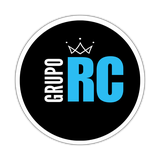
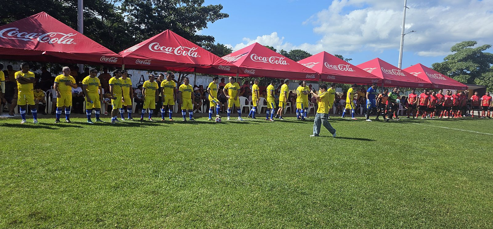
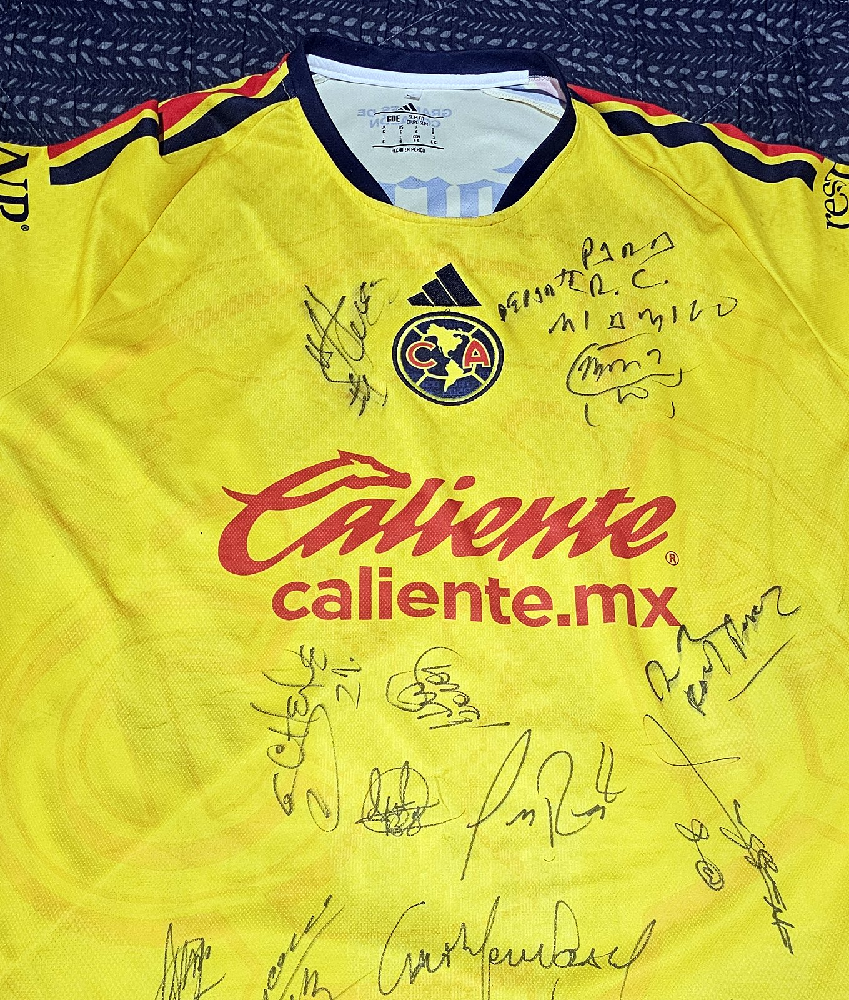
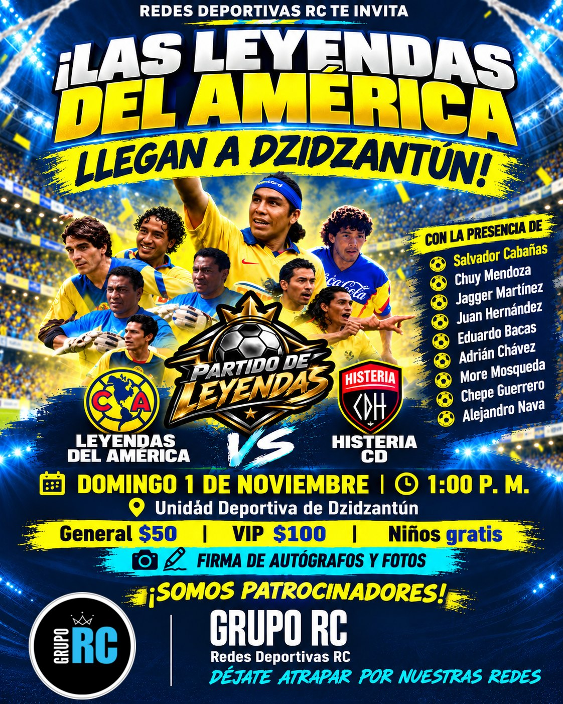

Redes Deportivas RC · patrocinador del partidoAsí se jugó
El domingo 1 de noviembre, las leyendas de las Águilas del América salieron a la cancha de la Unidad Deportiva de Dzidzantún contra Histeria Club Deportivo. Fue un partidazo, con goles de los dos lados: Histeria ganó 5 a 4.
No era un rival fácil. El capitán de Histeria fue nada más y nada menos que Freddy Martín.
Antes del silbatazo, el capitán de las leyendas, More Mosqueda, reunió a todo el equipo del América para dar instrucciones y decidir quiénes iniciaban.
Uno de los goles del América llegó de penal, y el balonazo puso a prueba nuestras redes: la red de la portería se estiró y aguantó.
Así se ve nuestra red desde atrás de la portería, con el portero de las leyendas, Adrián Chávez, en acción.

Con las leyendas
Después del partido hubo firma de autógrafos y fotos con las leyendas para quienes entraron a la zona VIP, incluida la ganadora del pase doble VIP de nuestro concurso. Nuestra playera quedó firmada y dedicada «Para Redes R.C.».

Bolsas baloneras RC para las leyendas
Ese día les regalamos a las leyendas bolsas baloneras de Redes Deportivas RC.
Cómo se anunció

Las Águilas del América llegaron a Dzidzantún con sus leyendas para jugar contra Histeria Club Deportivo en la Unidad Deportiva: la oportunidad de ver de cerca a jugadores que muchos crecimos viendo en la tele.
Figuras anunciadas
La organización del partido anunció a:
Lista de figuras según los materiales de la organización del evento.
Actividades
⚽ Partido de fútbol: Leyendas del América vs. Histeria CD.
📸 Firma de autógrafos y fotos con las leyendas.